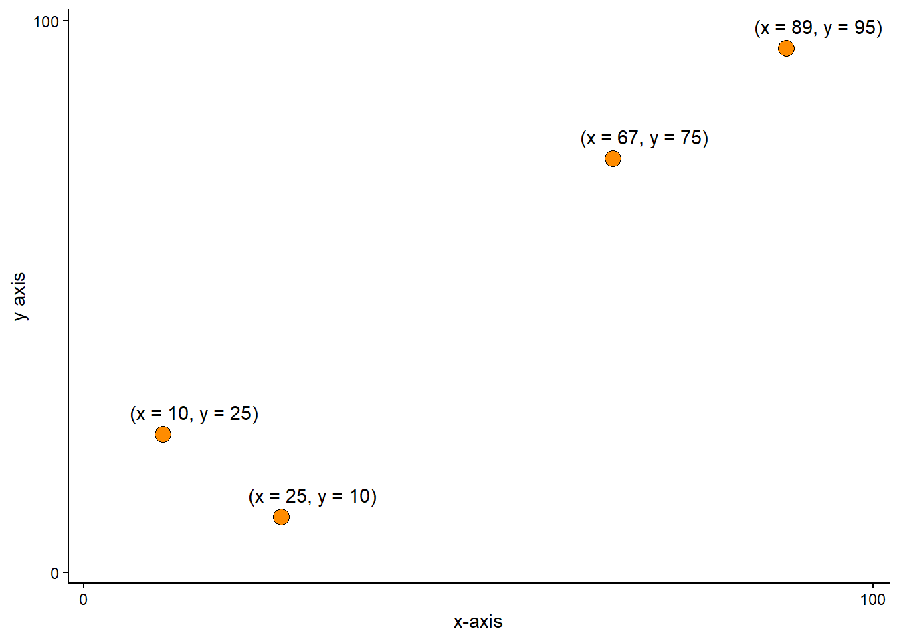
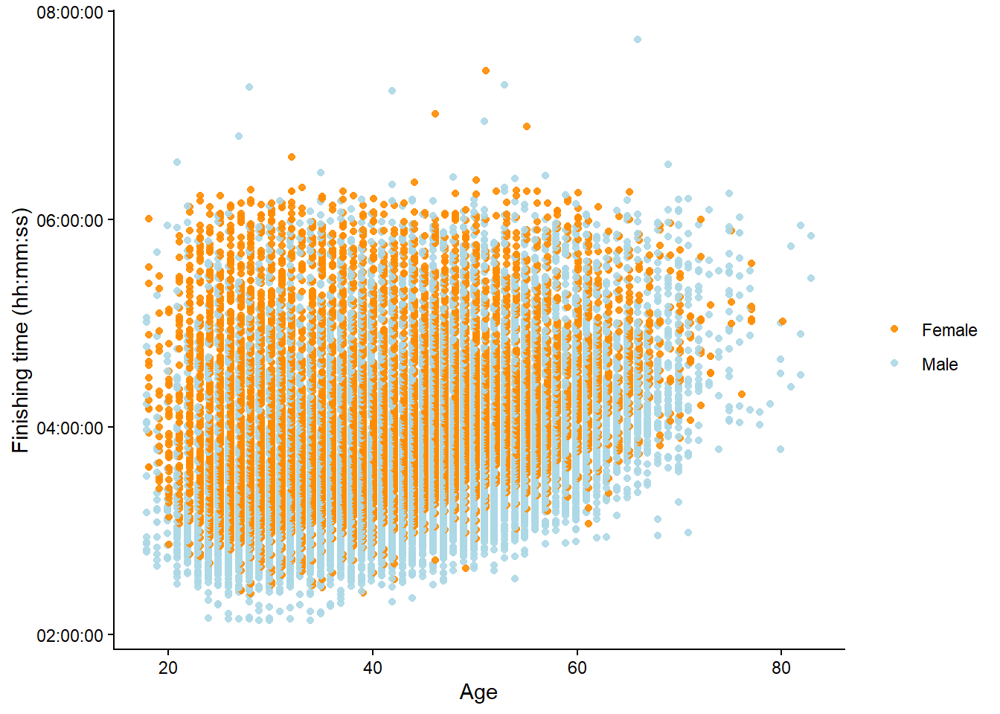
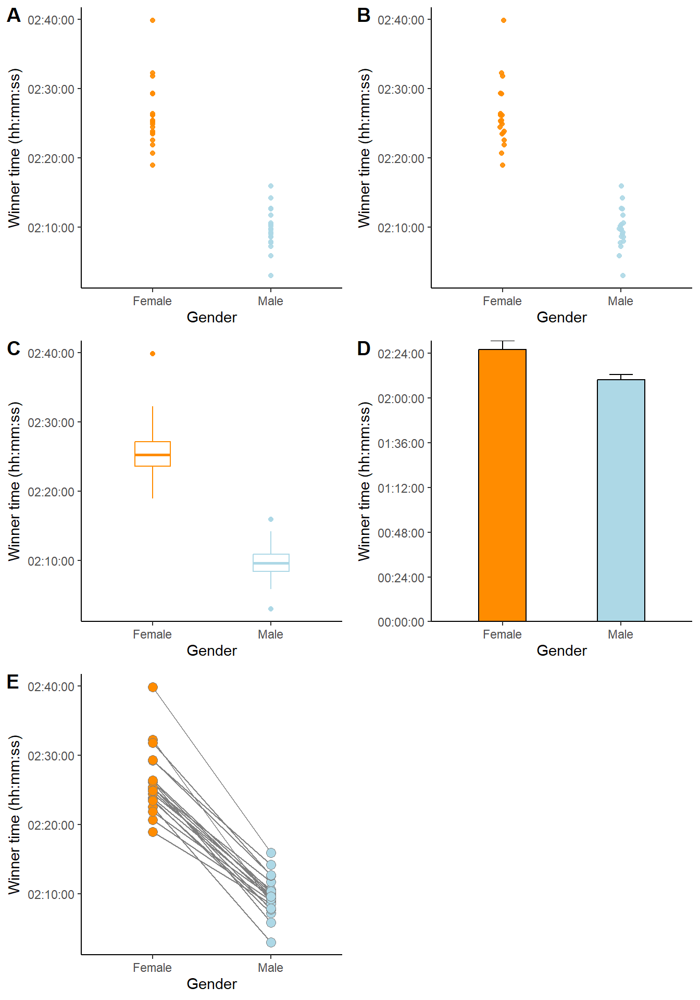
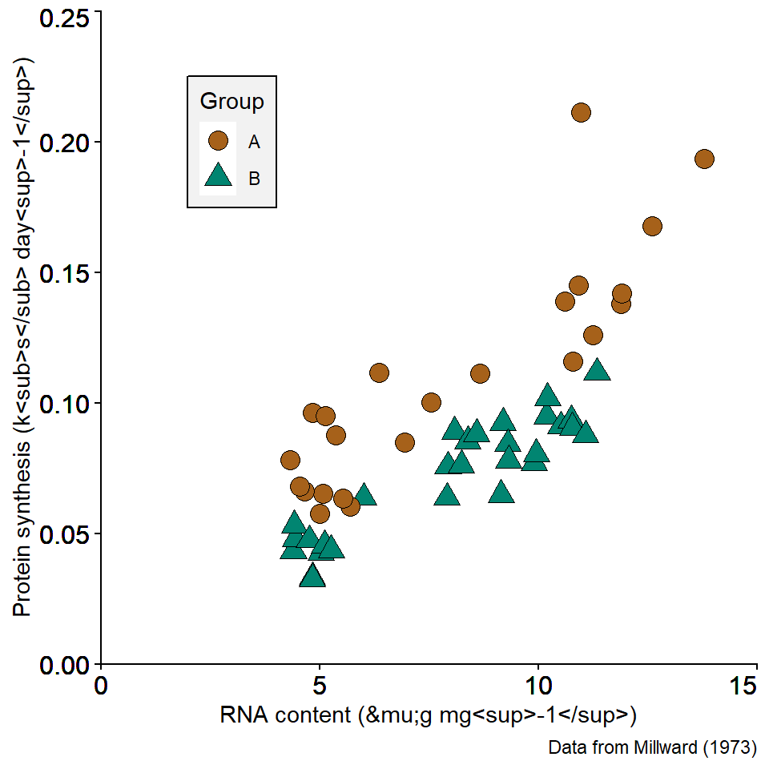
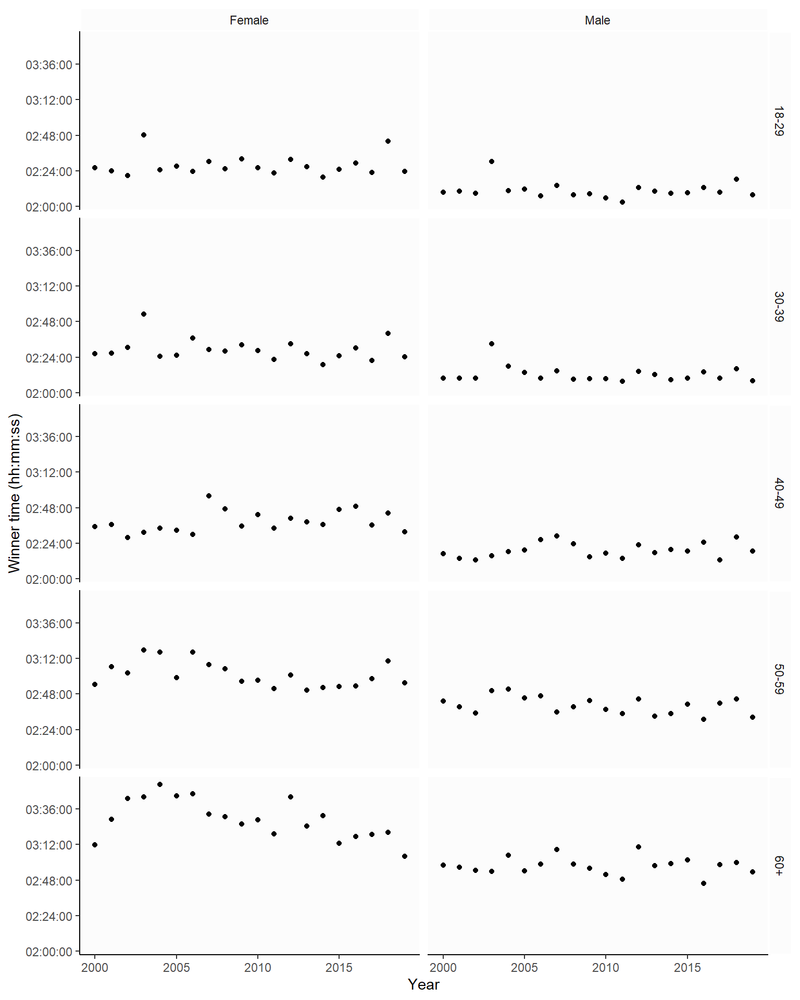
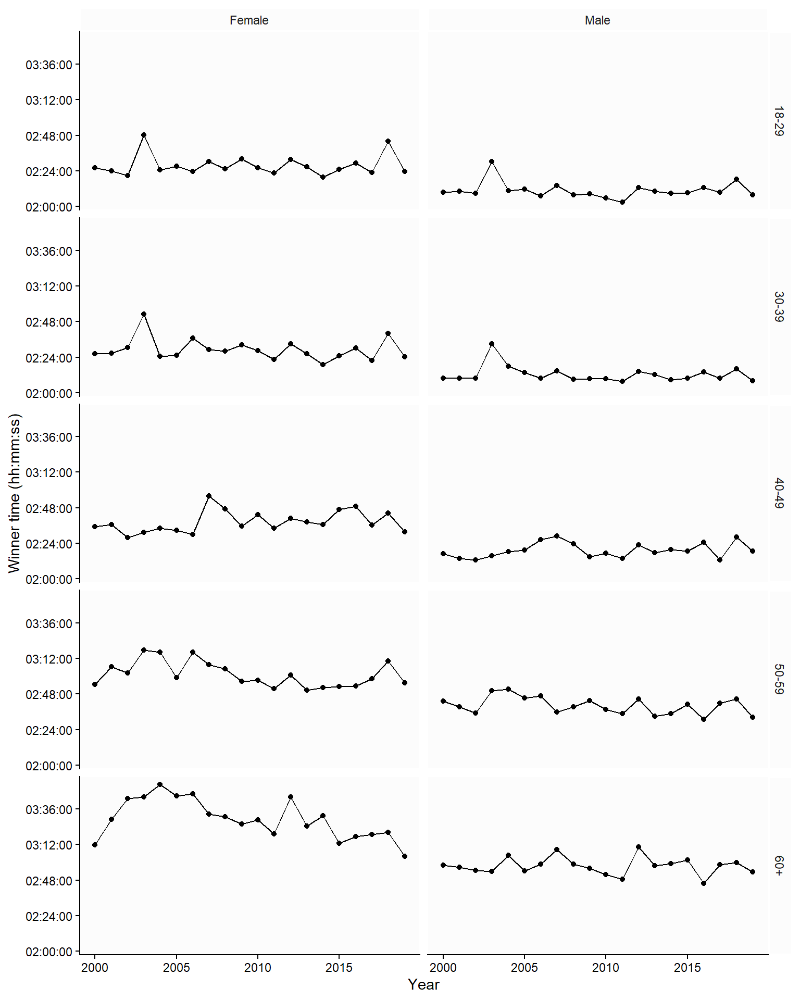
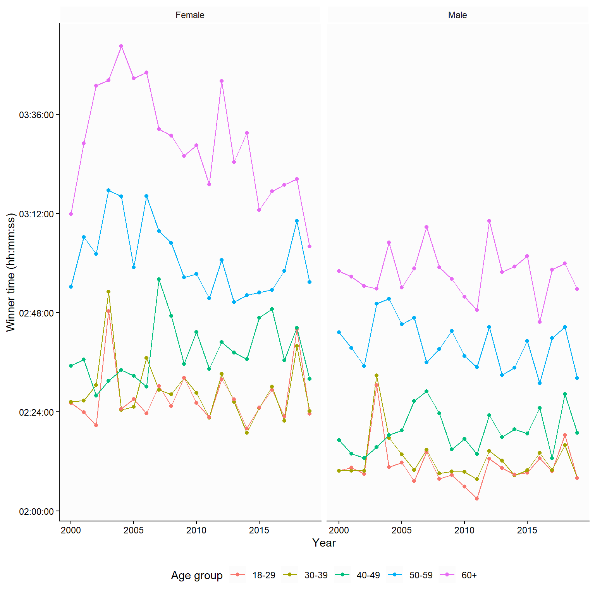
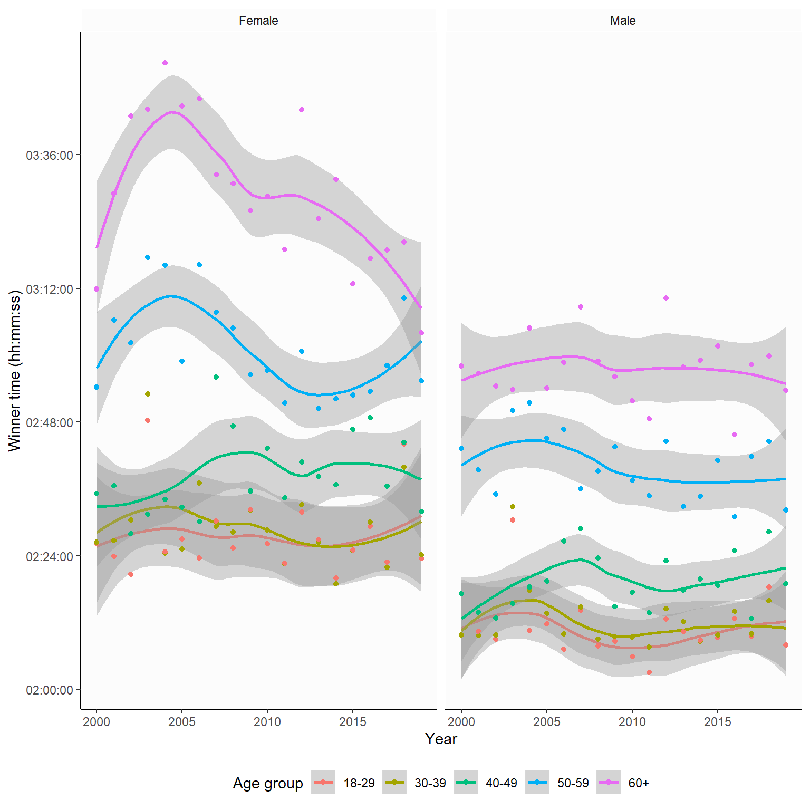

4 Visualizing data
In the previous chapter, we saw that simple visualizations can give us a general sense of the shape (distribution) of a single variable using histograms and density plots. We expanded the figures by adding colors to differentiate by gender and incorporating a second axis to display run times by gender, which gave us a sense of the variation in two variables. We could extend this further by incorporating more variables mapped to colors or shapes, or by subdividing the plot by additional variables. Such flexibility makes data visualizations essential for developing an understanding of data and communicating results from data analysis. Visualizations can convey aspects of data that are not possible to communicate with summary statistics or tables.
In this chapter, we will identify basic types of figures used in scientific papers and data communication.
4.1 Plotting data in two dimensions
A basic data visualization uses a coordinate system to display data along measurement scales. The x- and y-axis form a basic template for a two-dimensional display (two variables) of data. The scales for the x- and y-axis could be numerical and continuous or categorical. In the figure below, two continuous measurements are mapped to the x- and y-axis. Each observation has a value for each axis, making it possible to plot them in the two-dimensional coordinate system (Figure 4.1).
The above figure is called a scatter plot. The scatter plot is a powerful tool to visualize an association between two variables. The association becomes evident when a pattern emerges from plotting two variables together. When plotting the variables Age and finishing time in the Boston Marathon, we can clearly see a pattern, as maximal running velocity decreases with age. We have added a third dimension to the figure by giving different colors to males and females (Figure 4.2).

By replacing a continuous variable on one axis with a categorical variable, we get a visualization suitable for comparisons. When the purpose of a graph is to highlight differences between categories (or associations between a categorical variable and a continuous variable), we could use a variation of a basic scatter plot, as shown in Figure 4.3. However, some designs are better than others. The first panel (A) uses simple points to represent each observation (winner time per year). A slight jitter (panel B) makes it easier to see the individual points. Aggregated data removes the information gained from seeing variation between individual data points, as in panel C, where box-plots represent time per gender, or as in D, where the data has been reduced to a mean (the bars) and a standard deviation (the whiskers). The bar plot (D) is particularly bad, as most of the bar does not contain any actual data; there are no observations from zero to about 2 hours. To highlight the paired nature of the data, we could connect observations done in particular years (as in panel E). From this, we can learn that the winning times are consistently lower in males compared to females. Even though there is some overlap between genders, no year contains data where females ran faster than males.

4.2 Adding variables using figure elements
In the above figures, we have already added a variable by assigning colors to highlight two groups. Using colors and shapes is a way to add multiple dimensions to a plot. In Figure 4.4, two different colors and shapes are assigned to two categories in the data. This allows us to plot additional variables. The additional variable is explained by a legend shown in the plot.
We can also use multiple panels to show relationships between variables in different categories. In Figure 4.5, combining two categorical variables yields small multiples of the same basic graph; each panel represents data in a specific combination of age and gender.

4.3 Showing trends over time
In Figure 4.5, we used a time series of winning times in the Boston Marathon. The trend over time was not highlighted; to do this, we could add a line to produce line graphs. In Figure 4.6, the graph implies that we are comparing females to males in each age category, as we use the same y-axis for both genders in each age group. An alternative comparison would be the age-group comparison. To highlight this comparison, we could plot each age group using the same y-axis (Figure 4.7).



4.4 Trends from models
Many statistical software programs produce graphs that show the result of a statistical model. In Figure 4.8, the lines connecting individual years have been replaced by model-based smooths. In this case, the underlying model is a locally estimated scatterplot smoothing. It shows us an approximate moving average. The gray fields represent the model “uncertainty”, in this case, the 95% confidence interval.

4.5 Creating figures in JASP
4.6 Creating figures in JASP
JASP has powerful visualization capabilities. Under the Descriptives module and Descriptive statistics, basic descriptive plots can be designed. A distribution plot can be created to show a histogram of a continuous variable or a frequency plot of a categorical variable.
Also in the Descriptives module, Plot builder and Flexplot allow for data visualizations. Plot builder is the more advanced of the two. In Plot builder we are able to add variables to x- and y-coordinates of the figure. A grouping variable can be used to separate categories present in the data. Axis and plot annotations can be added to the figure, and aggregation can be done by plotting the mean, median, and error bars. Furthermore, simple curve fitting can add results from a statistical model to the plot.
In the screen shot below you can see an example analysis made in JASP using the Plot builder module. You can download the JASP-file here.

4.7 Creating data visualizations in R
One reason for using R is the potent visualization capabilities. R is probably the most versatile ecosystem for creating scientific graphics. There are several well-documented packages for data visualisation; ggplot2 is perhaps the most accessible package of them. See Chapter 5 here for an introduction to ggplot2.